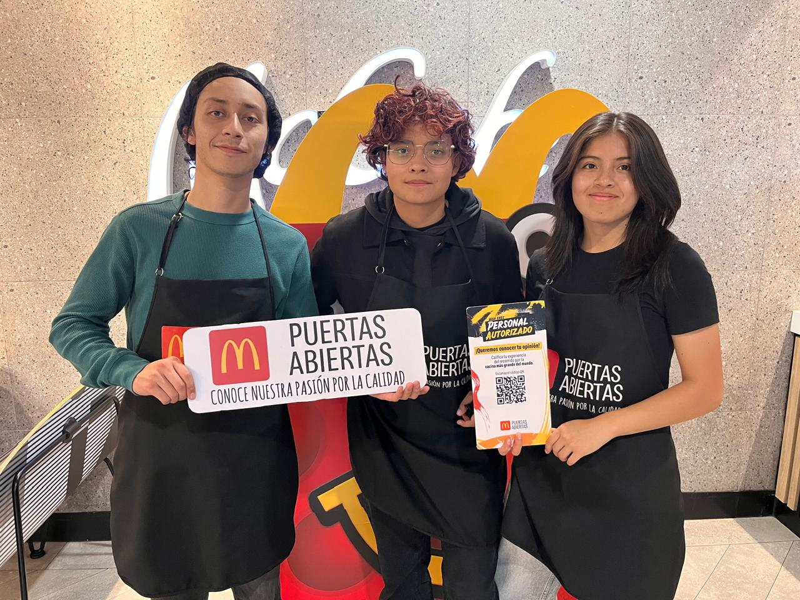

Dar a conocer a artistas, intérpretes y compositores
Visibilizar el talento local e independiente con un espacio digital donde su música, su historia y su propuesta tengan una vitrina directa hacia el público.
Escaparate Musical nació de una necesidad simple: crear un archivo de la escena musical independiente, alternativa y underground del Ecuador.
Demasiada historia se pierde entre publicaciones que desaparecen y páginas que dejan de pagarse. Construimos un lugar permanente para las bandas que arman los pogos, los escenarios que prestan la tarima y la comunidad que los sostiene.
No somos una enciclopedia musical: somos el mapa de nuestra cultura sónica.

Visibilizar el talento local e independiente con un espacio digital donde su música, su historia y su propuesta tengan una vitrina directa hacia el público.
Un punto de encuentro accesible donde músicos, bandas, gestores culturales y seguidores puedan encontrarse, colaborar e intercambiar ideas para fortalecer el ecosistema musical.
Alineaciones, discografías, años de actividad y bandas ya disueltas. Si no queda registrado en algún lado, en cinco años nadie lo recuerda.
Este es un proyecto colaborativo en construcción permanente. Si tienes datos históricos, quieres actualizar el perfil de tu banda o registrar un escenario, escríbenos.